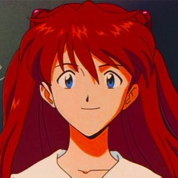
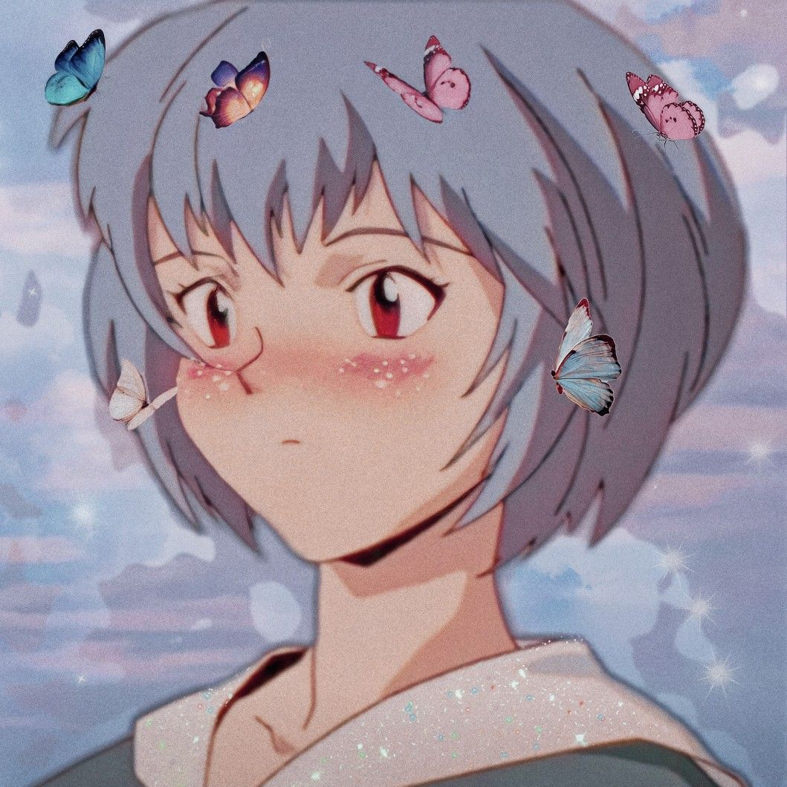
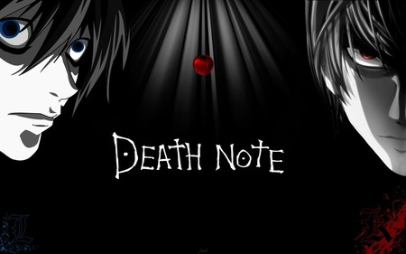
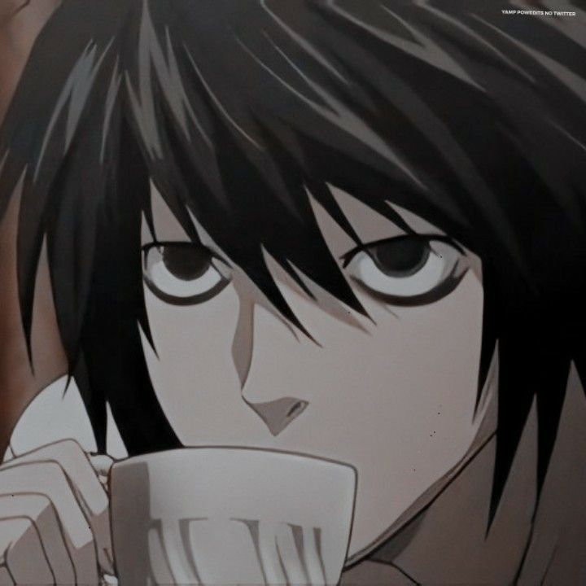
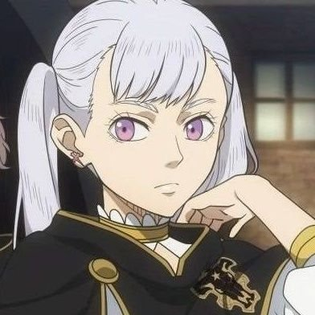
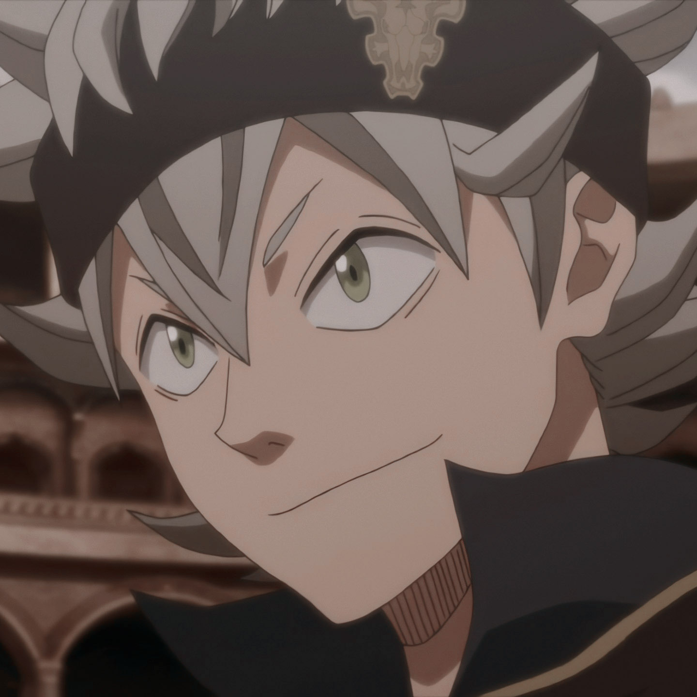
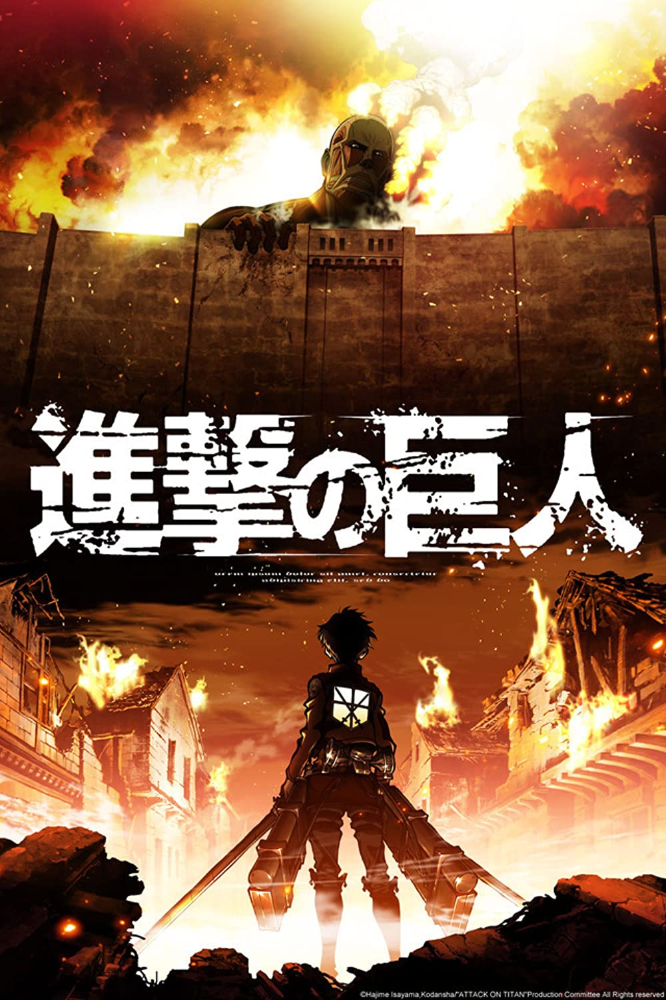
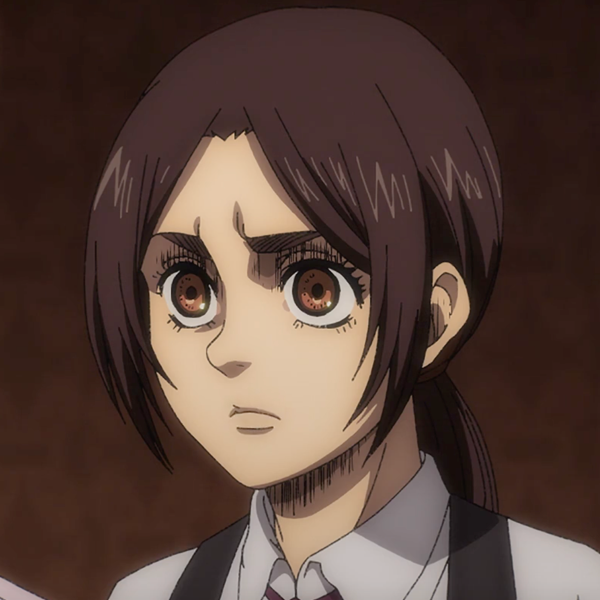
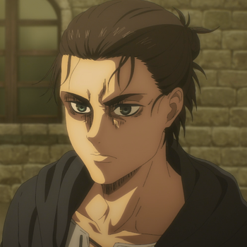

Evangelion

Neon Genesis Evangelion (新世紀エヴァンゲリオン Shin Seiki Evangerion?), also known simply as Evangelion, or Eva, is an anime series created by the Gainax studio and directed by Hideaki Anno. The story takes place in a futuristic world in which a paramilitary organisation called NERV protects humanity from attacks by beings of unknown origin and nature, the "Angels", using humanoid bio-mechas called Evangelion (shortened to EVA). As the plot progresses, it gradually becomes more confusing and psychological, where the characters' personalities become increasingly unstable and their development becomes pivotal. Hideaki Anno, the director and screenwriter, has said that the development of the series was inspired by his own experience, whereby the characters show a wide range of their emotional afflictions and personalities.
Asuka Langley
Asuka Langley Sohryu (惣流・アスカ・ラングレー[?],"Sōryū Asuka Rangurē") is a 14-year-old fictional character from the Neon Genesis Evangelion franchise and one of the main female characters. Asuka is designated as the Second Child ("Second Children" in the original Japanese versions) of the Evangelion Project and pilots the Evangelion Unit-02. Her surname is romanized as Soryu in the English manga and Sohryu in the English version of the TV series, the English version of the anime movie.
Rei ayanami

Rei Ayanami (綾波 レイ[?], "Ayanami Rei") is a fictional character from the Neon Genesis Evangelion franchise. She is the First Child, (referred as the First Children in the Japanese version), the pilot of Evangelion Unit-00 and one of the central characters.
At the beginning of the series, little is known about Rei and her stoic personality puzzles her peers. As the series progresses, her personality evolves and she becomes more involved with the people around her.
Shinji Ikari

Shinji Ikari (碇シンジ[?], "Ikari Shinji") is the Third Child, the main protagonist of the series and the designated pilot of Evangelion Unit-01. He is the son of Gehirn bioengineer Yui Ikari and NERV Commander (formerly Chief of Gehirn) Gendo Ikari. After his mother's death, he was abandoned by his father and lived for 11 years with his sensei, until he was summoned to Tokyo-3 to pilot Unit-01 against the Angels. He lives initially just with Misato Katsuragi; they are later joined by Asuka Langley Soryu.
Death Note

Death Note (stylized as DEATH NOTE ) is a Japanese manga series written by Tsugumi Ohba and illustrated by Takeshi Obata. The story follows Light Yagami, a teenage genius who discovers a mysterious notebook: the "Death Note", which belonged to Shinigami Ryuk, and grants the user the supernatural ability to kill anyone whose name is written in its pages. The series focuses on Light's subsequent attempts to use the Death Note to carry out a worldwide massacre of people he considers immoral and to create a crime-free society, using the alias of a divine vigilante named "Kira", and the subsequent efforts of an elite Japanese police task force, led by the enigmatic Detective L, to stop him. Death Note was published in Shueisha's Weekly Shōnen Jump manga magazine from December 2003 to May 2006. Its 108 chapters were collected in 12 tankōbon volumes. 
Misa Amane

Misa Amane (弥 海砂, Amane Misa) is an up-and-coming model and supporter of Kira who eventually becomes the Second Kira. After gaining a Death Note, she seeks out Kira in order to thank him for killing the man who murdered her family and to offer him her help. Having made the trade for the Shinigami Eyes, Misa learns that the identity of Kira is Light Yagami.
Misa is a short, slender, attractive young woman with long, straight, golden-blonde hair, most commonly styled with a portion of her hair in pigtails tied with red bands, but occasionally worn loose as well. In the anime, it seems that she was a brunette at one point.
Light Yagami

Light Yagami (夜神月, Yagami Raito) is the main protagonist of the Death Note series. After discovering the Death Note, he decides to use it to rid the world of criminals. His killings are eventually labelled by the people living in Japan as the work of "Kira."
Light is a young man, standing at above average height with light-brown hair and brown eyes. During Part I, when not wearing his school uniform, which consists of a tan suit and red tie, he dresses fairly casually, sometimes sporting a dress shirt underneath a jacket or a V-neck sweater with a collared t-shirt underneath. During Part II, if not wearing a similar style of clothes, he is seen wearing a suit.
L

L「エル Eru? whose real name is L Lawliet 「エル＝ローライト Eru Rōraito?」is the mysterious detective who takes on the mission to catch Kira. Although his face and name are initially unknown, he eventually introduces himself to other characters throughout the series, revealing his strange personality and becoming one of the main characters of the series.
L ("Elle" in the Italian version), is considered to be the best detective in the world, thanks to the fact that in the past he managed to solve the most complicated cases that no one else could, for example the serial killer BB as well as preventing the world from entering World War III.
Black Clover

Black Clover 「ブラッククローバー Burakku Kurōbā」 is a Japanese manga series written and illustrated by Yūki Tabata. The series began serialization on February 16, 2015, on Weekly Shōnen Jump's 12th issue. The story focuses on fantasy, adventure and comedy genres while maintaining the "Young Boys" 「少年 Shōnen」 demography.
Asta and Yuno are orphans raised in the outskirts of the Clover Kingdom. In a world where people are born with magic, Asta was born without any. In contrast, Yuno was born a prodigy with above average magic power and the talent to control it. Additionally, in their coming of age ceremony, Yuno receives a rare four-leaf clover grimoire, like the original Magic Emperor. On the other hand, Asta received a tattered grimoire where a Devil lies within, a five-leaf clover grimoire.
The story follows Asta and Yuno as they crawl their way up the ladder of the Clover Kingdom's Order of the Magic Knights, in the midst of scrutiny by the nobles, to become the Magic Emperor. However, the title is only preserved for a single mage.
Noelle Silva

Noelle Silva 「ノエル・シルヴァ Noeru Shiruva」 is a noblewoman and the second daughter of the Clover Kingdom's House Silva, one of its royal families. She is also a 3rd Class Junior Magic Knight of the Black Bull and Royal Knights squads.
Undine, the spirit of water, chooses to serve Noelle after her contract with Princess Lolopechka is temporarily weakened.
Noelle is a 15-year-old girl with a slender build and pink eyes. She possesses long, silver-colored hair, which is usually tied in pigtails, with her center bangs over her forehead.
Yuno

Yuno 「ユノ」 is an orphan who was left under the care of a church in Hage after the downfall of House Grinberryall, the former royal family of the Spade Kingdom. He wields a four-leaf clover grimoire and is a Magic Knight of the Clover Kingdom's Golden Dawn and Royal Knights squads. He is later promoted to vice-captain of the Golden Dawn.
Sylph, the spirit of wind, chooses to serve Yuno after he finds her scroll in a dungeon. He is also the human vessel for the reincarnated spirit of Licht and Tetia's son.is a young man of average height with a lean build, amber eyes, and messy black hair.
Asta

Asta「ア ス タAsuta」 is an orphan raised under the care of a church in Hage after his mother abandoned him at the church door. After his 15th birthday, Asta receives a five-leaf clover grimoire with an Anti Magic devil inside. He joins the United Clover's Black Bull platoon of mage knights and becomes a third class junior Magic Knight and temporarily a royal knight.
Asta is a short young man with an exceptionally muscular build. He has green eyes and messy ash blond hair with fringes in front of his forehead and a single lock of hair sticking upwards from the centre of his head.
Attac On Titan

Attack on Titan (進撃の巨人 Shingeki no Kyojin?, lit. Advancing Giant(s)) is an anime series based on the manga of the same name by Hajime Isayama. It was produced by Wit Studio and Production I.G for the first three seasons and by MAPPA for the fourth. The first season began airing in Japan on April 7, 2013, on Mainichi Broadcasting System.
Funimation licensed the series for an English release and home video and also streams the series on its website, along with Crunchyroll. The series is also streamed by AnimeLab in Tokyo, Chicago, Australia, and New Zealand.
The highly anticipated second season premiered on April 1, 2017. A third season was announced at the end of the second season's last episode and released on July 23, 2018. After airing 12 episodes, Season 3 was put on hiatus and resumed on April 29, 2019.
When the final episode of the third season aired on July 1, 2019, it was announced that the fourth season of the anime series, titled Attack on Titan: The Final Season, was scheduled to air on NHK General during the fall 2020 anime season. The Final Season premiered on December 7, 2020. After airing 16 episodes, The Final Season was put on hiatus and is scheduled to resume in January 2022.
Gabi Braun

Gabi Braun (ガビ・ブラウン Gabi Buraun?) is an Eldian serving in the Marleyan Military and the cousin of Reiner Braun. She is a candidate (戦士候補生 Senshi Kōho-sei?) that is likely to inherit the Armored Titan's power.
Gabi is very passionate and head-strong, expressing her emotions and opinions without inhibition and confident in her superiority over the other Warrior candidates. She is also brave, possessing boundless determination, and willing to put her life on the line to complete a goal for a perceived greater good. She also shows concern for her fellow Eldians, risking her life to take out a train instead of letting 800 of her brethren charge the gunmen guarding their objective.
Mikasa Ackerman

Mikasa Ackermann (ミカサ・アッカーマン Mikasa Akkāman?) is one of the two deuteragonists of the series. She is the last descendant of the Shogun clan that stayed on Paradis Island, thereby related to the Azumabito family, and holds significant political power in Hizuru.
After her mother and father were murdered by bandits, Mikasa was rescued by Eren. She lived with him and his parents for approximately one year before the Fall of Wall Maria.
Though she desires only to live a peaceful life with Eren, Mikasa chose to follow him into the military—where she is considered the best soldier among the 104th Cadet Corps.
Eren Jaeger

Eren Jaeger (エレン・イェーガー Eren Yēgā?) is a former member of the Scout Regiment and the main protagonist of Attack on Titan. He is the only son of Grisha and Carla Jaeger, the younger paternal half brother of Zeke Jaeger, and the current holder of the Attack Titan, Founding Titan, and the War Hammer Titan.
Eren was born and raised in Shiganshina District, which is located on the southern edge of Wall Maria. He lived there until the year 845, when the Colossal and Armored Titans breached the Wall, allowing a flood of Titans to invade and destroy the city. During the incident, Eren witnessed his mother being murdered and eaten by a smiling Titan.